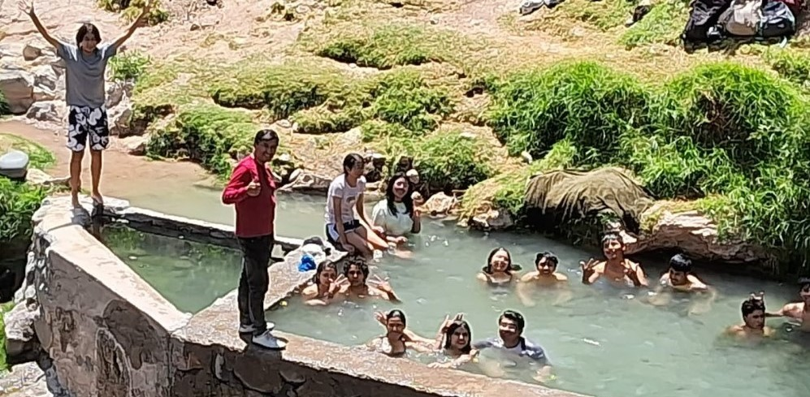

Desde tiempos antiguos, las aguas termales han sido valoradas por sus propiedades curativas y relajantes. Los griegos descubrieron sus beneficios, pero los romanos desarrollaron y popularizaron las termas. Inicialmente privadas y ubicadas en villas de los ricos, con el tiempo se institucionalizaron y surgieron los baños públicos, conocidos como thermae. Además, todas las aguas termales, al igual que las subterráneas, provienen del agua de lluvia o del deshielo que se infiltra a través del suelo, formando parte del ciclo hidrológico. Sin embargo, no toda el agua que cae sobre la superficie terrestre sigue el mismo camino.
|

|